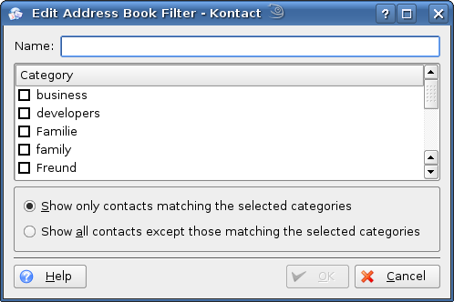

You can setup filters in KAddressBook which depend on the categories a contact belongs to. For example, you can create a filter that matches all contacts which belong to the categories Family and Friends; you can also create a filter that matches all contacts which do not these categories. To manage filters, use the filter configuration dialog:

The Filter Configuration Dialog.
Filters can be used in views to reduce the number of contacts shown. In the view configuration dialog you can specify what filter should be used by a view by default.